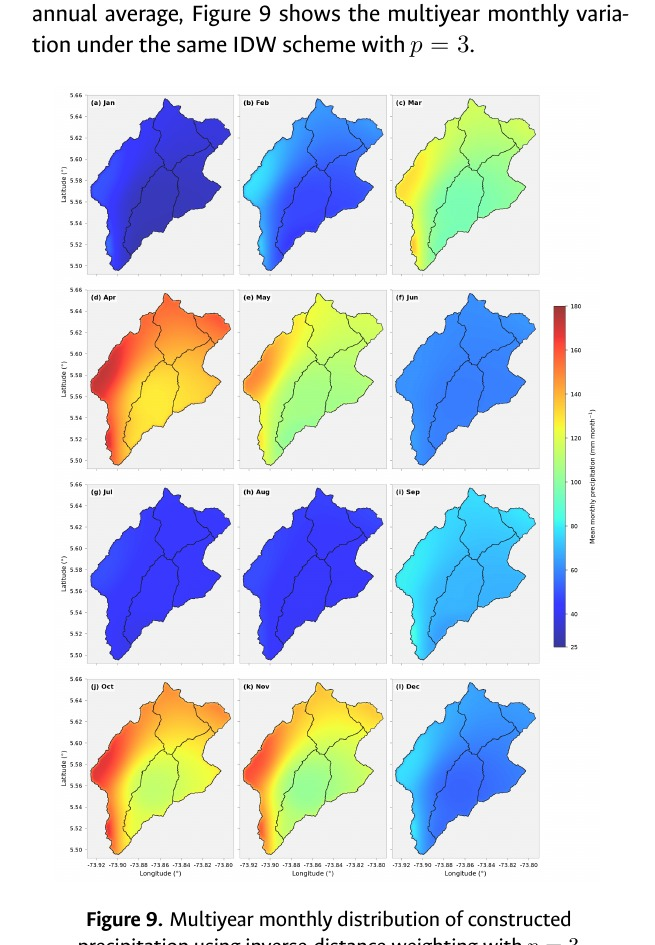
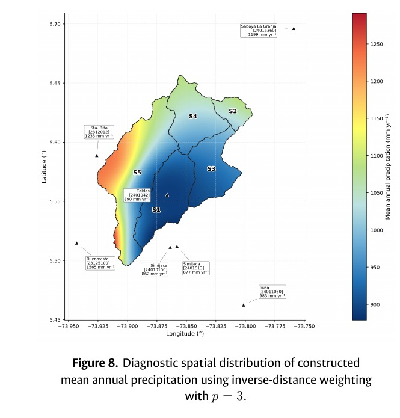
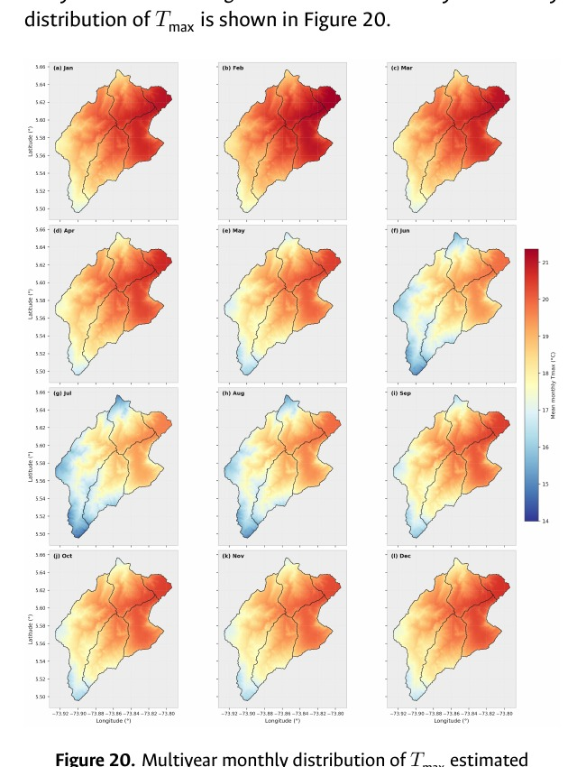
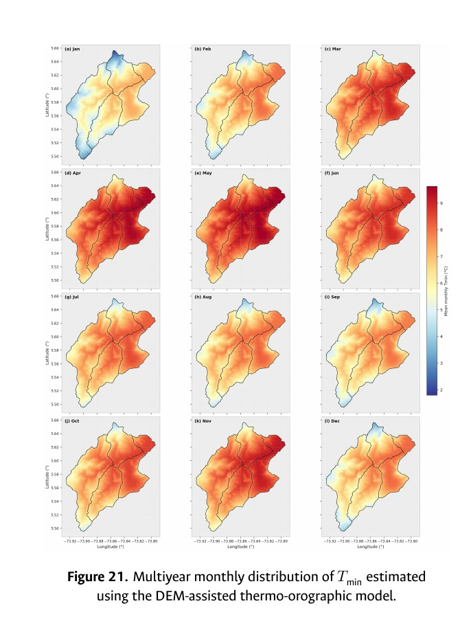
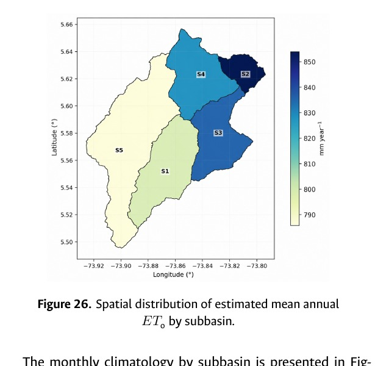

Research in active development · HEC-HMS · EnKF · Python
Stochastic parameter estimation in a semi-distributed hydrological model.
Development of a traceable hydroclimatic modelling configuration and an external Ensemble Kalman Filter workflow for continuous parameter updating in a partially instrumented Andean basin.
Precipitation, temperature, reference evapotranspiration, discharge and HEC-HMS modelling.
Random Forest reconstruction, spatial aggregation, thermo-orographic transfer and stochastic calibration.
Journal manuscript in active development. Results and figures remain preliminary.
Research problem
Continuous modelling under limited observations.
The study addresses two coupled challenges: constructing hydrometeorological inputs with explicit traceability and evaluating whether an external EnKF calibrator can add information beyond event-based deterministic calibration.
The portfolio presents only selected diagnostics. It does not describe the constructed products as official climatology or direct observations at every spatial unit.
Selected diagnostics
Spatial patterns used to construct and assess model inputs.
The figures summarize precipitation, maximum and minimum temperature, and estimated atmospheric demand for the model domain.






Technical contribution
From raw records to a reproducible calibration workflow.
- Quality control and differentiated reconstruction of hydroclimatic series.
- Regional two-stage Random Forest modelling for precipitation occurrence and conditional magnitude.
- Spatial aggregation to subbasins and construction of temperature and reference-evapotranspiration inputs.
- Semi-distributed HEC-HMS implementation and automated external model execution.
- Sequential parameter updating, uncertainty analysis and comparison with event-based calibration.